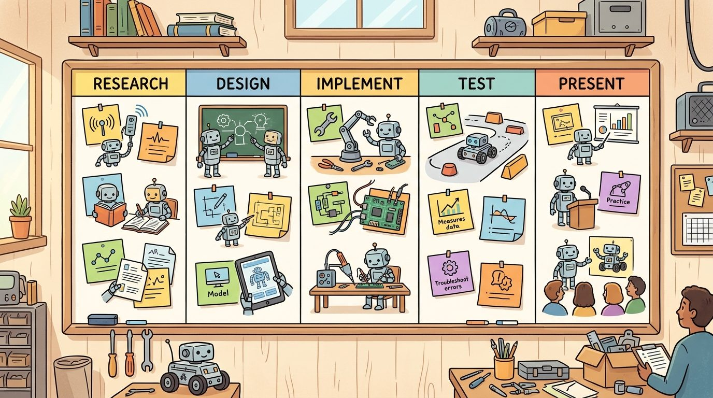
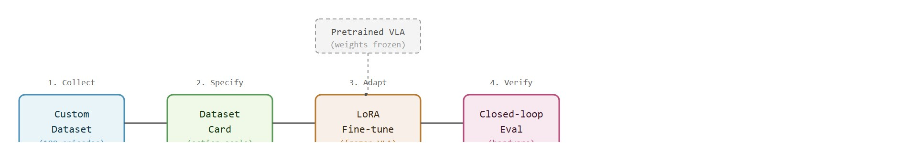

"Fine-tuning made me confident. The baseline made me explain myself."
An Open VLA With A Task Panel

This section assumes familiarity with behavior cloning and the distribution-shift problem from section 21.2, and with the OpenVLA architecture and its action-tokenization scheme from sections 34.3 and 34.5. The action-scale mismatch failure demonstrated here recurs in section 59.5, where sim-to-real transfer introduces a related class of representation-boundary errors, and in section 35.4, where cross-embodiment fine-tuning makes the same dataset-card fields load-bearing at scale.
A robot arm stares at a mug it has never seen before. A foundation vision-language-action (VLA) model, trained on hundreds of thousands of demonstrations, produces a plausible-looking grasp that misses by two centimeters every time. Twenty minutes of your own teleoperated data, fine-tuned with LeRobot, closes that gap. This is the moment embodied AI shifts from "impressive on the benchmark dataset" to genuinely useful on your bench. Pretrained VLAs now exist that understand language and can act, but they have no memory of your gripper, your lighting, or your objects. Fine-tuning is how you close that gap without collecting millions of examples. Here you will record a small dataset, adapt OpenVLA to a custom manipulation task, and build the evaluation discipline to know whether it actually worked.
A model that has watched hundreds of thousands of robot demonstrations can still miss your mug by two centimeters on every single grasp, and no amount of staring at its falling loss curve will tell you why; the answer lives in twenty minutes of your own teleoperated data and one field on a dataset card. This section turns that frustrating gap into a usable mental model. The object of study comes first, then its place in the agent loop, then a compact implementation that tests it. Figure 59.4A frames the scene the rest of the section formalizes: a pretrained policy meeting an unfamiliar gripper, task, and workspace.
The key question in Fine-tune an open VLA on a custom task (LeRobot) is practical: what must the agent know, what can it observe, what action is available, and what evidence shows that the action worked under the stated conditions? Figure 59.4B lays out the four-stage pipeline that answers these questions in order, from data collection through frozen-backbone adaptation to closed-loop verification.

The recipe and worked example below use this LoRA adapter operationally, as the mechanism that updates task-specific weights; the reasoning for why LoRA rather than full fine-tuning is the right choice for a 7B backbone is deferred to the "Why LoRA, Not Full Fine-tuning" callout later in this section, once the action-scale contract that the adapter must respect has been established.
Open VLA fine-tuning with LeRobot should be judged by the action it improves. A section claim is strong when it names the decision, the measurement, and the failure mode before a larger model or simulator is introduced.
For Fine-tune an open VLA on a custom task (LeRobot), the practical design rule is to make the interface inspectable before optimization begins: inputs, outputs, units, latency, bounds, and failure labels should all be visible in the saved artifact.
The mechanism in Fine-tune an open VLA on a custom task (LeRobot) is the contract between representation and action. Name what enters the module, what leaves it, which assumptions make that transformation valid, and which log would reveal a bad handoff.
Keep one concrete rollout in view. The wrist-mounted RealSense D435 on a Franka Panda streams a 224x224 RGB crop; OpenVLA-7b tokenizes it together with the language command "fold the towel" and emits a 7-DoF delta end-effector action, where 7-DoF means seven degrees of freedom (three for translation, three for rotation, and one for the gripper) and "delta" means each value is a small change from the current pose rather than an absolute target. Here teleoperation is the act of a human driving the robot directly, for example with a joystick or leader arm, to record the demonstration trajectories the model learns from. The arm moves, the gripper closes on the towel edge, and the next frame either shows the fabric lifting or shows the fingers clipping the table. That single transition, from camera frame to executed displacement to the next observed contact, is the only thing the fine-tuning is allowed to improve. If offline loss drops but the towel still slips through the fingers on every closed-loop rollout, nothing real has changed.
Use LeRobot, OpenVLA-style checkpoints, ACT or diffusion-policy loaders, and dataset cards for this project. The preserved fields are dataset version, embodiment, camera layout, language command, action representation, fine-tuning config, and held-out rollout label (a "held-out split" is a portion of episodes set aside and never used for training, so it can be checked afterward to see whether the model generalizes rather than merely memorizes).
A policy that works in simulation but fails on hardware is not a policy; it is a hypothesis waiting for a closed-loop test.
Turning that single rollout and its closed-loop test into a repeatable procedure is what the following recipe codifies, step by ordered step.
Think of action tokenization like a measuring cup with fixed graduation marks. If your recipe was written for a cup marked in tablespoons but you grab a cup marked in teaspoons, the number you read off the scale is identical, yet the physical quantity you pour is three times too much. The model learns to predict the correct graduation mark (token index), but the physical amount that pours out depends entirely on which cup was used during data collection. Swapping cups mid-recipe without relabeling everything causes every measurement to be wrong by the same fixed ratio, and no amount of practice with the new recipe corrects it until you re-mark the cup.
The common mistake in Fine-tune an open VLA on a custom task (LeRobot) is to trust a component score before checking the closed-loop interface. The failure usually appears where state, timing, authority, or evaluation context crosses a module boundary.
Many practitioners assume that a rising offline accuracy metric (action-prediction loss on the held-out split) proves that fine-tuning succeeded. It does not. Offline metrics evaluate token predictions in isolation, so they cannot detect action-scale mismatches, broken camera calibrations, or reset-distribution drift. Each of these produces consistent prediction errors that surface only during closed-loop execution on hardware. Treat offline accuracy as a necessary but not sufficient condition for real-world improvement. Evaluate a fine-tuned policy with at least one closed-loop rollout on the physical robot before you make any performance claim, and have the evaluation script verify that action scale, camera pose, and object placement match the training distribution exactly.
Consider a specific case. A practitioner fine-tunes OpenVLA-7b on 180 towel-folding episodes collected with a Franka Panda at 30 Hz. Offline action-prediction accuracy improves from 62% to 81% on the held-out split. But on hardware the robot overshoots by roughly 3 cm on every grasp. The root cause is action-tokenization scale. The pretrained VLA learned from a different arm whose end-effector travels 0.05 m per token step, while the Franka dataset was collected at 0.02 m per step. Training drove the fine-tuning loss down, yet no metric caught the action-representation mismatch because the offline metric never touched the physical scale. Adding one line to the dataset card, action_scale_m_per_token: 0.02, and retraining with a rescaled action head eliminates the overshoot. This class of failure is invisible to per-step accuracy but obvious in the first hardware rollout. The numbers tell the story plainly: offline accuracy climbed from 62% to 81%, yet every single grasp missed by 3 cm until one dataset-card field was corrected.
A team using Fine-tune an open VLA on a custom task (LeRobot) starts by writing the task panel, not by picking the largest model. They keep a baseline run, a maintained-tool run, and a perturbation run in the same result folder. The comparison is accepted only when the action trace, metric, and failure labels come from one script.
Trace one predicted action token through OpenVLA's uniform quantization to see exactly where the scale mismatch bites. Take the x-axis of the delta end-effector action. The model emits token index 178 out of 256. The model's quantizer maps the per-dimension range to the interval [-1.0, +1.0], so token t decodes to the normalized value (t / 255) * 2 - 1 = (178 / 255) * 2 - 1 = 0.698 * 2 - 1 = +0.396. Now apply the dataset's physical scale. The pretrained corpus used action_scale = 0.05 m, so this token would mean 0.396 * 0.05 = 0.0198 m, roughly 2 cm. But your Franka data was collected at action_scale = 0.02 m, so the same normalized +0.396 should mean 0.396 * 0.02 = 0.0079 m, roughly 0.8 cm. The model learns to emit token 178 correctly, yet the robot executes 0.0198 m instead of 0.0079 m, overshooting by a factor of 0.05 / 0.02 = 2.5x on every single step. Across a 15-step grasp the per-step 1.2 cm excess accumulates: the gripper ends up about 3 cm past the towel edge, exactly the symptom seen on hardware. Notice the offline loss never sees meters; it only checks that token 178 was predicted, which it was. The fix, action_scale_m_per_token: 0.02 in the dataset card, changes the decoder's multiplier from 0.05 to 0.02 and the overshoot disappears.
A similar workflow to the one in this section is typical of Hugging Face's LeRobot community, where users fine-tune the open ACT and pi0 policies on the low-cost SO-100 / SO-ARM100 (a roughly 100-dollar 3D-printed arm) using a few hundred teleoperated episodes each. Many custom LeRobotDataset cards have accumulated on the Hub, and the same dataset-card discipline (embodiment, camera layout, action scale) is what typically lets one operator's towel-folding data train reliably on another operator's identically built arm.
When Fine-tune an open VLA on a custom task (LeRobot) feels abstract, ask what would be different in the next frame of video, the next robot state, or the next safety margin.
For Fine-tune an open VLA on a custom task (LeRobot), the open research question is not whether a larger policy can produce a better demo. The sharper question is whether the method improves reliability across new scenes, new embodiments, delayed feedback, and rare failures under an evaluation protocol that another lab can reproduce.
For Fine-tune an open VLA on a custom task (LeRobot), can you name the observation, action, protected assumption, success metric, and one likely failure case? If any field is vague, rewrite the contract before adding model complexity.
This capstone puts the reader directly into the current open robot-foundation-model ecosystem. The value is not just using a modern VLA; it is learning how to define a narrow custom task, prepare the evidence card, and fine-tune without losing sight of action interfaces and evaluation discipline.
A common failure is treating fine-tuning as a black-box recipe. This section instead asks what the dataset, embodiment, and action-tokenization assumptions are, and which metric should prove that task adaptation really happened.
Fine-tune an open VLA on a custom task (LeRobot) becomes teachable once the student can state the operative variables, the decision boundary, and the evidence artifact. The section should therefore be read together with Chapter 34 on VLAs and Chapter 24 on data quality, where the same loop is developed from adjacent angles.
Let $\pi_\theta(a_{1:H}\mid o_{1:T},g)$ be the open VLA and fine-tune by minimizing $\mathcal{L}(\theta)=\mathbb{E}_{(o,g,a)\sim D_{custom}}[-\log \pi_\theta(a\mid o,g)]$ on a custom dataset while freezing or adapting chosen backbone layers.
The loss is familiar, but the embodied stakes are different: tokenization, action discretization, and embodiment mismatch can dominate the outcome. To see why scale matters so sharply here, consider that the pretraining corpus behind a 7B VLA typically contains 50,000 or more demonstrations; your custom fine-tuning dataset might contain 300, yet the adapted policy can, in practice, outperform the pretrained baseline on your specific task because the gradient is being applied to exactly the right distribution shift rather than averaging over hundreds of unrelated robots and scenes. Fine-tuning is therefore a systems adaptation problem as much as a machine-learning one, and the system boundary that matters most is the action-scale contract between dataset and model.
A 7B-parameter VLA backbone holds general visual and language representations built from millions of internet images and text. Full fine-tuning on 180 robot episodes will overwrite those representations before the task-specific signal is strong enough to replace them, a phenomenon called catastrophic forgetting. LoRA sidesteps this by inserting small low-rank matrices (rank 16 adds roughly 8 M trainable parameters, less than 0.2% of the backbone) into the attention projections (the learned weight matrices inside each transformer layer that decide which parts of the input the model attends to), leaving the pretrained weights frozen. The adapter learns only the task-specific delta, the language and visual features stay intact, and GPU memory stays within a single 24 GB card. The tradeoff is that LoRA cannot correct a systematic action-scale mismatch or a broken camera calibration; those require fixing the data, not the adapter rank.
| Dimension | What To Specify | Why It Matters |
|---|---|---|
| Task scope | One clear household or tabletop behavior | Keeps the data collection burden realistic. |
| Dataset card | Episode count, operator, camera, embodiment, label policy | Makes fine-tuning assumptions explicit. |
| Compute plan | Batch size, precision, frozen layers, runtime budget | Fits the capstone to real student resources. |
| Evaluation | Same task panel before and after fine-tuning | Shows whether adaptation actually helped. |
The expected output should be a reproducible fine-tuning manifest, not a notebook with hidden state. If a reader cannot recover the task, split, and freeze policy from the printed card, the capstone is not yet reproducible.
That manifest only becomes concrete once it is wired to runnable code, so the sketch below shows the smallest LeRobot pipeline that honors the same dataset-card and frozen-backbone contract.
The three steps below form the minimal runnable skeleton: load a LeRobot-format dataset, attach a LoRA adapter that freezes the pretrained backbone while updating only the task-specific parameters, then run a compact training loop mirroring the standard LeRobot script.
# Step 1: load a LeRobot dataset
from lerobot.common.datasets.lerobot_dataset import LeRobotDataset
dataset = LeRobotDataset(
repo_id="your-org/towel-fold-180eps", # Hugging Face dataset id
split="train",
image_transforms=None, # add augmentations here for domain randomization
)
dataloader = dataset.to_dataloader(batch_size=8, shuffle=True)
# Step 2: configure a LoRA adapter on an OpenVLA-style backbone
from peft import LoraConfig, get_peft_model
from lerobot.common.policies.openvla.modeling_openvla import OpenVLAForActionPrediction
base_policy = OpenVLAForActionPrediction.from_pretrained("openvla/openvla-7b")
lora_cfg = LoraConfig(r=16, lora_alpha=32, target_modules=["q_proj", "v_proj"])
policy = get_peft_model(base_policy, lora_cfg)
policy.print_trainable_parameters() # expect ~0.1-0.2% of total params
# Step 3: minimal training loop (3 lines of logic)
optimizer = torch.optim.AdamW(policy.parameters(), lr=2e-4)
for batch in dataloader:
loss = policy(**batch).loss # LeRobot batch already contains obs, actions, language
loss.backward(); optimizer.step(); optimizer.zero_grad()
# Step 4: save the adapter for closed-loop evaluation and reuse
policy.save_pretrained("checkpoints/towel-fold-lora") # saves only the ~8M LoRA weights
# At deployment, reload with: get_peft_model(base_policy, lora_cfg).load_adapter(...)repo_id with your collected dataset, adjust r and lora_alpha to fit GPU memory, and wrap the loop with a scheduler and eval step before submission.Saving the adapter this way is what turns "fine-tuning" from a training-loop exercise into a usable artifact: the checkpoint in checkpoints/towel-fold-lora is the exact file loaded onto the robot for the closed-loop rollouts described in the Practical Recipe and the Lab below. Without this step, a lower training loss never becomes a policy you can actually test on hardware.
Set lora_alpha to exactly twice your rank (r=16, lora_alpha=32) as a starting point: this keeps the effective learning-rate scaling factor at 2.0 regardless of rank, making rank sweeps directly comparable without re-tuning the optimizer. If you later halve the rank to r=8 to fit a smaller GPU, halve lora_alpha to 16 at the same time; leaving lora_alpha=32 with r=8 implicitly doubles the adapter's contribution and often causes the action head to overfit within the first epoch. A quick sanity check is to call policy.print_trainable_parameters() and confirm the reported parameter count drops roughly proportionally when you change r.
After the from-scratch contract is clear, the practical route uses LeRobot, OpenVLA, Hugging Face datasets, PyTorch, Accelerate, Weights & Biases. The payoff is that standard interfaces, logging, batching, and replay support move from ad hoc glue code into maintained infrastructure, while the evidence schema stays the same.
This project is ideal for a course because it exposes current tooling while keeping the task local. The most instructive result often comes from a small adaptation that helps one camera setup but hurts another, forcing the reader to reason about generalization instead of celebrating one headline win.
Active directions (2024-2026):
1. Data-efficient fine-tuning with co-training mixtures. Rather than fine-tuning on task data alone, recent work mixes a small custom dataset with a curated subset of the pretraining corpus to prevent catastrophic forgetting. OpenVLA-OFT (Kim et al., 2025, Stanford) shows that parallel decoding with a quantization-free action head, combined with frozen-backbone co-training, reduces the custom-data budget by roughly 3x compared to standard LoRA while matching success rates on real Franka tasks.
2. Continuous-action VLAs that bypass tokenization entirely. The discrete-token action representation that causes action-scale mismatches has become a research target in its own right. pi0 (Black et al., 2024, Physical Intelligence) and RoboVLMs with flow-matching heads (flow matching trains the network to predict a continuous path from noise to action directly, the same family of technique used by diffusion models, rather than picking one of 256 discrete tokens) replace the vocabulary lookup with a diffusion or flow process over continuous action space, eliminating the token-to-meters mismatch by construction and producing smoother, higher-frequency trajectories on dexterous manipulation tasks.
3. Test-time adaptation via online rollout data. Rather than collecting a fixed offline dataset, recent systems update the policy incrementally from live rollouts during deployment. GROOT (Wang et al., 2024, NVIDIA) and related methods from the Berkeley Robot Learning Lab use a small replay buffer of recent successes and failures to update only the task-specific adapter weights at test time, achieving single-task recovery from distribution shift without a separate offline fine-tuning phase.
So far: three active research directions all attack the same action-scale problem from different angles, co-training mixtures reduce how much custom data you need, continuous-action heads remove discrete tokenization entirely, and test-time adaptation updates the policy after deployment instead of only before it.
Open problem for a PhD student: None of these approaches yet provides a principled criterion for when to stop fine-tuning. Offline loss plateaus before hardware performance saturates, hardware rollouts are expensive, and online adaptation can overfit to a narrow reset distribution. A rigorous stopping rule that is observable from the training log alone, grounded in information-theoretic bounds on closed-loop regret, remains an open problem with direct practical value for resource-constrained robot deployments.
For open VLA fine-tuning, the artifact should show whether improvement comes from better language grounding, better visual features, better action decoding, or a narrower reset distribution.
Beginner (weekend): Use LeRobot to fine-tune a pretrained ACT policy on 30 teleoperated episodes of picking a single object in PyBullet simulation; the key challenge is writing a correct dataset card that specifies action scale and camera layout so the offline accuracy metric reflects a failure you can actually diagnose. Intermediate (1-2 weeks): Collect 150 real or MuJoCo-simulated towel-folding demonstrations with a Franka Panda or its MuJoCo model, fine-tune OpenVLA with LoRA via LeRobot, and evaluate on three held-out object placements; the key challenge is detecting and correcting the action-tokenization scale mismatch before trusting any offline accuracy number. Advanced (3-4 weeks): Build a ROS2 node that streams wrist-camera frames and joint states into a LeRobot-format dataset in real time, fine-tune a diffusion policy on the resulting episodes in Isaac Lab, and run a camera-pose perturbation test to separate geometry-aware generalization from pixel memorization.
Goal (15-30 min): Build the action-scale sanity check that the section argues is invisible to offline loss, using a tiny synthetic dataset so no robot or GPU is needed.
Tools needed: Python with numpy and matplotlib (no LeRobot or GPU required). Optionally lerobot if you want to load a real LeRobotDataset from the Hub.
Steps: (1) Generate 200 synthetic 7-DoF delta actions whose x-displacements are drawn from a normal distribution centered at 0.008 m (an 0.8 cm per-step grasp). (2) Quantize each action to a token index with a quantizer assuming action_scale = 0.02 m, then decode it back with a wrong scale of 0.05 m to simulate a borrowed pretrained head. (3) Compute the per-step error in meters and the cumulative error over a 15-step rollout.
What to vary: the decode scale (0.02, 0.03, 0.05, 0.08 m) and the number of steps in a rollout (5, 15, 30).
What to observe: per-step error stays small and looks tolerable, but cumulative error grows linearly and crosses the ~3 cm collision threshold around step 15 when the decode scale is 0.05 m, while the token-prediction accuracy stays a perfect 100% the entire time. The takeaway: an offline metric can read 100% correct while the robot is guaranteed to overshoot, and only an explicit meters-space check reveals it.
Design a method-matched experiment for Fine-tune an open VLA on a custom task (LeRobot). Specify the environment, observation schema, action interface, metric, and one perturbation that targets the section's core assumption.
Cadene, R. et al. LeRobot: State-of-the-art Machine Learning for Real-World Robotics in Pytorch. GitHub project and technical documentation, 2024.
Use for dataset conversion, policy training, and capstone projects built around open robot-learning workflows.
Savva, M. et al. Habitat: A Platform for Embodied AI Research. ICCV, 2019.
Use for simulated navigation projects, reproducible scene tasks, and embodied evaluation loops.
Next, continue with section-59.5. Carry forward the artifact contract from Fine-tune an open VLA on a custom task (LeRobot), but change exactly one design axis before comparing results: embodiment, action interface, evaluation panel, or safety risk.